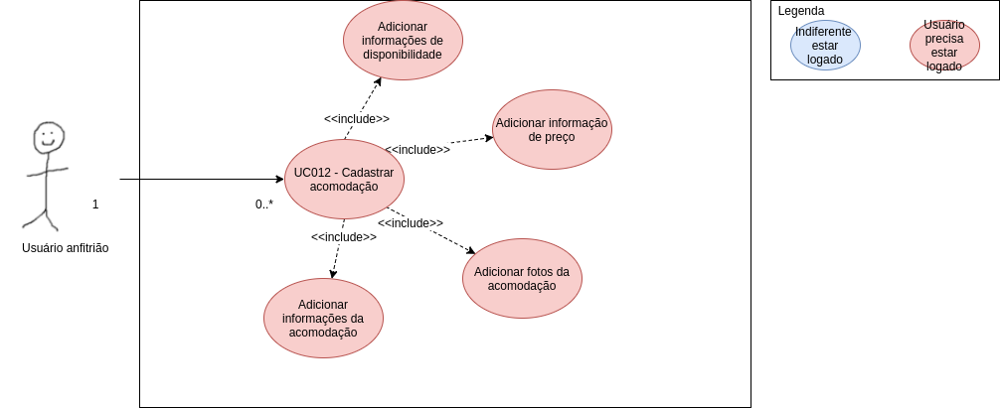
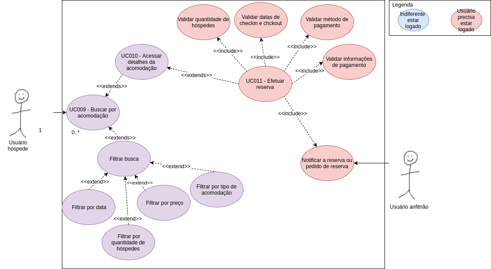

Casos de Uso - Hospedagem
2018.2
UC 09 - Pesquisar acomodações
| Descrição | Este caso de uso permite que o usuário pesquise acomodações cadastradas na aplicação por cidade, país ou estado. | ||||||||||||
|---|---|---|---|---|---|---|---|---|---|---|---|---|---|
| Ator | Usuário - hóspede | ||||||||||||
| Pré-requisitos | Conexão com a internet, o usuário pode ou não estar logado. | ||||||||||||
| Fluxo Principal |
1. O usuário acessa a página airbnb.com.br 2. O usuário insere a localização desejada na barra de pesquisa 3. O usuário pode selecionar filtros relativos a acomodações para refinar seus resultados, tais como: datas de disponiblidade, faixa de preço, tipo de acomodação, opções de checkin, instalações, regras, tipo de propriedade. 4. A página de busca retorna os resultados filtrados. |
||||||||||||
| Fluxo Alternativo 01: |
Acessar a página de acomodações através da página inicial 1. O usuário acessa a página do Airbnb. 2. O usuário seleciona o menu de acomodações na página inicial, logo abaixo da questão "O que podemos ajudar você a encontrar?" 3. O usuário será redirecionado para a página de resultados de busca sendo demonstrando resultados genéricos. |
||||||||||||
| Regras de Negócio 01: |
|
||||||||||||
| Fluxo de Exceção 01: Localização não existente |
1. O usuário acessa a página airbnb.com.br. 2. O usuário insere a localização desejada na barra de busca. 3. A página de busca retorna sem resultados. |
||||||||||||
| Fluxo de Exceção 02: Não há resultados para os filtros adicionados pelo usuário |
1. O usuário acessa a página airbnb.com.br. 2. O usuário insere a localização desejada na barra de busca. 3. O usuário insere filtros não atendidos pelas acomodações pesquisadas na localidade. 4. A página de busca retorna sem resultados. |
||||||||||||
| Fluxo de Exceção 03: Não há acomodações na localização pesquisada |
1. O usuário acessa a página airbnb.com.br. 2. O usuário insere a localização desejada na barra de busca. 3. A localização é válida, mas não existem acomodações disponíveis. 4. A página de busca retorna sem resultados. |
||||||||||||
| Pós-condição | O usuário é redirecionado para uma página de busca com a localização e filtros desejados. |
UC 10 - Acessar detalhes da Acomodação
| Descrição | Este caso de uso permite que o usuário visualize os detalhes de acomodações pesquisadas através da barra de busca. | ||||||||
|---|---|---|---|---|---|---|---|---|---|
| Ator | Usuário - hóspede | ||||||||
| Pré-requisitos | Acesso à internet, ter efetuado uma busca | ||||||||
| Fluxo Principal |
1. O usuário efetuou uma busca. 2. O usuário clica na acomodação desejada na página de busca. 3. O usuário é redirecionado para os detalhes da acomodação. |
||||||||
| Fluxo Alternativo 01: | O usuário acessa os detalhes de uma acomodação anunciada na página inicial. 1. O usuário acessa a página do Airbnb. 2. O usuário clica em alguma acomodação anunciada na página principal. 3. O usuário será redirecionado para a página de detalhes da acomodação. |
||||||||
| Regras de Negócio 01: |
|
||||||||
| Pós-condição | O usuário é redirecionado para uma página de detalhes da acomodação desejada. |
UC 11 - Reservar Acomodação
| Descrição | Este caso de uso permite que o usuário reserve uma acomodação pesquisada. | ||||||||||||||||||||||||||||
|---|---|---|---|---|---|---|---|---|---|---|---|---|---|---|---|---|---|---|---|---|---|---|---|---|---|---|---|---|---|
| Ator | Usuário - hóspede | ||||||||||||||||||||||||||||
| Pré-requisitos | Conexão com a internet, ter acessado os detalhes de uma acomodação, possuir uma conta no Airbnb, estar logado. | ||||||||||||||||||||||||||||
| Fluxo Principal |
1. O usuário hóspede acessou os detalhes da acomodação. 2. O usuário hóspede seleciona as datas de checkin e checkout desejadas. 3. O usuário hóspede adiciona a quantidade de hóspedes convidados que ficarão na acomodação. 4. O usuário clica em reservar. 5. O usuário seleciona o método de pagamento. 6. O usuário adiciona as informações de pagamento. 6. O usuário adiciona suas informações pessoais de pagamento(nome, endereço, código postal). 6. O usuário efetua a reserva. |
||||||||||||||||||||||||||||
| Fluxo Alternativo 01: |
A acomodação não está disponível nas datas desejadas 1. O usuário hóspede acessou os detalhes da acomodação. 2. O usuário hóspede seleciona as datas de checkin e checkout desejadas. 3. A acomodação não está disponível nas datas desejadas. 4. A reserva não é realizada. |
||||||||||||||||||||||||||||
| Fluxo Alternativo 02: |
A quantidade de hóspedes convidados não é compatível com a acomodação. 1. O usuário hóspede acessou os detalhes da acomodação. 2. O usuário hóspede seleciona as datas de checkin e checkout desejadas. 3. O usuário hóspede adiciona a quantidade de hóspedes convidados que ficarão na acomodação. 4. A acomodação não aceita a quantidade de hóspedes desejadas. 5. A reserva não é realizada. |
||||||||||||||||||||||||||||
| Fluxo Alternativo 03: |
acomodação não possui reserva instantânea. 1. O usuário hóspede acessou os detalhes da acomodação. 2. O usuário hóspede seleciona as datas de checkin e checkout desejadas. 3. O usuário hóspede adiciona a quantidade de hóspedes convidados que ficarão na acomodação. 4. O usuário clica em requisitar reserva. 5. O usuário seleciona o método de pagamento. 6. O usuário adiciona as informações de pagamento. 6. O usuário adiciona suas informações pessoais de pagamento(nome, endereço, código postal). 6. A requisição de reserva é enviada ao anfitrião. 7. O anfitrião pode aceitar ou recusar a requisição de reserva do hóspede. |
||||||||||||||||||||||||||||
| Fluxo Alternativo 04: |
O usuário deseja utilizar um método de pagamento não aceito pelo Airbnb. 1. O usuário hóspede acessou os detalhes da acomodação. 2. O usuário hóspede seleciona as datas de checkin e checkout desejadas. 3. O usuário hóspede adiciona a quantidade de hóspedes convidados que ficarão na acomodação. 4. O usuário clica em requisitar reserva. 5. O usuário seleciona o método de pagamento por cartão de crédito. 6. O usuário adiciona as informações de pagamento. 6. As informações de pagamento do cartão de crédito não são válidas. 7. O site impede o hóspede de continuar, retornando uma mensagem de erro. |
||||||||||||||||||||||||||||
| Regras de Negócio 01: |
|
||||||||||||||||||||||||||||
| Pós-condição | O usuário hóspede efetuou uma reserva. |
UC 12 - Cadastrar Acomodação
| Descrição | Este caso de uso permite que o usuário anfitrião cadastre sua acomodação. | ||||||||
|---|---|---|---|---|---|---|---|---|---|
| Ator | Anfitrião | ||||||||
| Pré-requisitos | Acesso à internet, usuário estar logado | ||||||||
| Fluxo Principal |
1. O usuário anfitrião acessa o site da Airbnb. 2. O usuário anfitrião clica em "Torne-se um anfitrião" na página principal. 3. O usuário anfitrião adiciona as informações da acomodação(camas, banheiros, espaços comuns e define o tipo de residência e endereço). 4. O usuário anfitrião adiciona fotos, resumo e o título da acomodação. 5. O usuário adiciona as informações de preço, disponibilidade e configuração de reserva(quantidades de hóspedes, reserva instantânea, horários de check-in). 6. O usuário anfitrião finaliza o cadastro da sua acomodação. |
||||||||
| Regras de Negócio 01: |
|
||||||||
| Pós-condição | O usuário anfitrião cadastra sua acomodação que passa a aparecer na página de busca. | ||||||||
| Diagrama de Caso de Uso |  |
Diagrama Geral de Hospedagem
